adm_name = "data/output/columns_adm.csv" # adjust if you have a different output location
data_adm = read.csv(adm_name) # read age-depth model data4 Time in rocks
4.1 Introduction
This chapter introduces the concept of age-depth models, which formalize geochronological knowledge and contain a lot of stratigraphic information, e.g. on sediment accumulation rates and hiatus location and duration.
At the end of the chapter you will
- be able to explain what an age-depth model is and what stratigraphic information it contains
- have an intuition on how age-depth models modify the stratigraphic distribution of fossils
These materials are adopted form the workshop “Modeling Stratigraphic Paleobiology in R”.
4.2 Tasks and discussion points
Work through the materials to get a feeling for how age-depth models work, which stratigraphic information they contain, and how they shape the stratigraphic distribution of fossils.
Explore the spatial variability of the age-depth models. What changes most/least, and how does this propagate into paleontological and evolutionary interpretations?
Of course you can replace the example data provided by the data you generated using CarboKitten. Does this change results? For both tasks above, pay attention to the connection between the external forcing (eustatic sea level and subsidence) and the observed biases. Do you see a connection or not? Does this change spatially?
For your own study system (studied group and temporal and spatial scale of observation), where do your age-depth models come from? Are you aware of them, or do you use them implicitly?
4.3 Loading data and constructing age-depth models
First let’s load the data from your stratigraphic forward model:
For the moment being, we focus on one specific location in the simulated platform, namely the proximal section. We start by extracting the time steps and the height data at examined location:
key = "proximal"
t = data_adm[,which(grepl("Myr",names(data_adm)))] # time step
h = data_adm[,which(grepl(key,names(data_adm)))] # heights at the location with key in the nameWith this, we can define the age-depth model object:
adm = admtools::tp_to_adm(t = t,
h = h,
T_unit = "Myr",
L_unit = "m")
admage-depth modelHere tp_to_adm stands for “tie points to age-depth model”.
You can get a quick overview over the properties of the age-depth model using summary:
summary(adm)age-depth model
Total duration: 1 Myr
Total thickness: 46.0238 m
Stratigraphic completeness: 35.34 %
39 hiatus(es)Plotting age-depth models works out of the box using the default plot function. You can plot the accumulative and destructive intervals separately.
plot(adm,
lwd_destr = 1, # line width destructive interval (hiatus)
lwd_acc = 2, # line width accumulative interval
col_destr = "blue",
col_acc = "black")
admtools::T_axis_lab() # add time axis label
admtools::L_axis_lab() # add length axis label (stratigraphic domain)
title(main = paste("Age-depth model at ", key, "location"))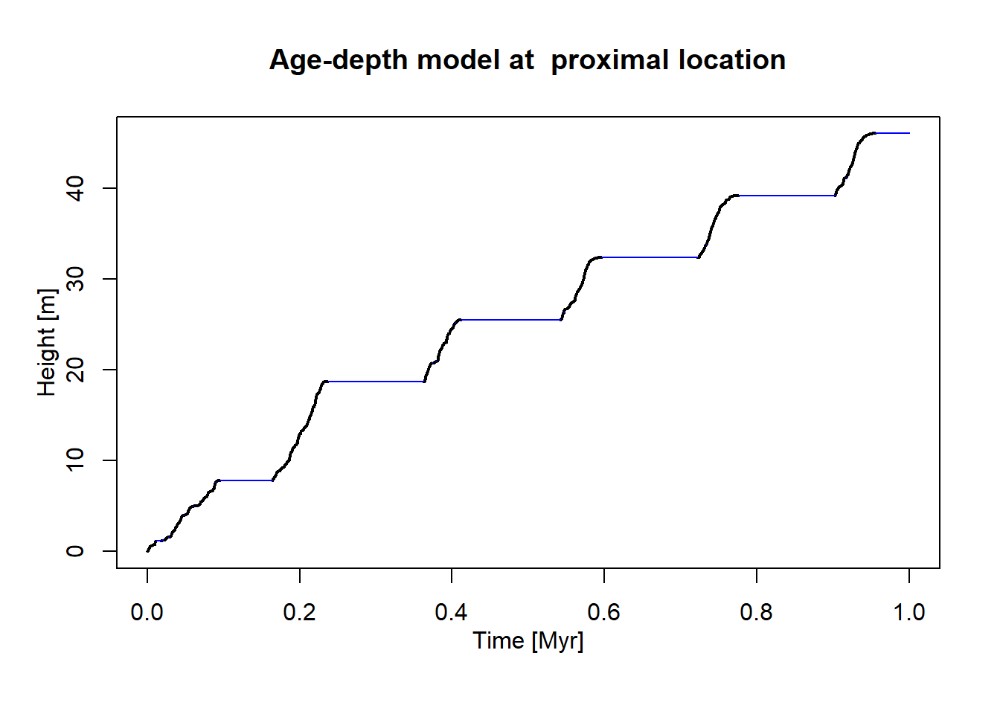
Here, gaps in the record are highlighted in blue.
4.4 Extracting data from age-depth models
Internally, age-depth model objects are just a list of times and associated times plus information about which intervals are erosive (meaning, they remove data). However, they are incredibly convenient to quickly extract basic stratigrahpic information.
For example, you can easily determine the number of hiatuses, time span covered, sediment accumulated, and stratigraphic (in)completeness:
# no of hiatuses
admtools::get_hiat_no(adm)[1] 39# total duration
admtools::get_total_duration(adm)[1] 1# total thickness of sediment accumulated
admtools::get_total_thickness(adm)[1] 46.0238# stratigraphic (in)completeness
# note this is incompleteness on the timescale of the temporal tie points
# here on the scale of your forward simulation
admtools::get_incompleteness(adm)[1] 0.6466admtools::get_completeness(adm)[1] 0.3534You can extract more information, e.g., exact gap timing and positions using get_hiat_list.
In addition, you can extract information on sediment accumulation rates both in the temporal and stratigraphic domain:
# constants for convenience
t_min = admtools::min_time(adm)
t_max = admtools::max_time(adm)
h_min = admtools::min_height(adm)
h_max = admtools::max_height(adm)
t_step = 0.01 # 10 kyr resolution
h_step = 1 # meter resolution
# plotting values
t_vals = seq(t_min, t_max, by = t_step)
h_vals = seq(h_min, h_max, by = h_step)
# Time domain plot
plot(x = t_vals,
y = admtools::sed_rate_t(adm, t_vals),
type = "l",
xlab = "Time [Myr]",
ylab = "Sediment accumulation rate [m/Myr]",
main = "Sediment accumulation (Time domain)")
# Stratigraphic domain plot
plot(x = admtools::sed_rate_l(adm, h_vals),
y = h_vals,
type = "l",
xlab = "Sediment accumulation [m/Myr]",
ylab = "Stratigraphic position [m]",
main = "Sediment accumulation (Stratigraphic domain)")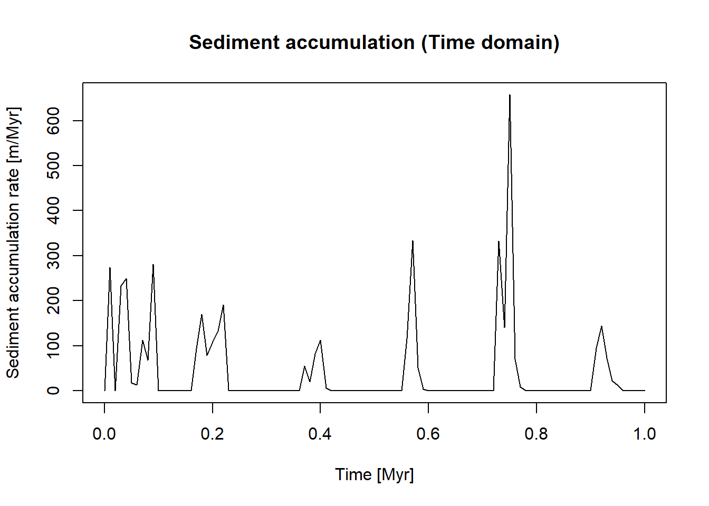
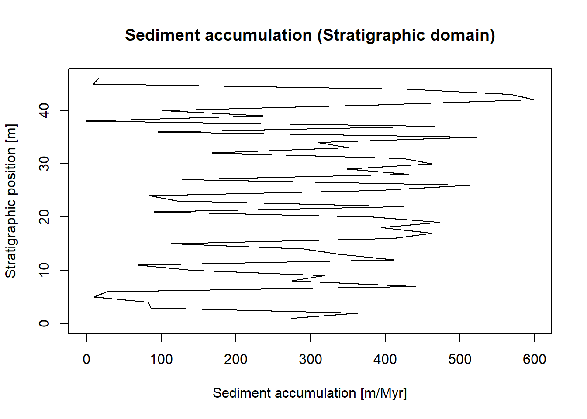
This nicely displays a major difference between the temporal and stratigraphic domain: In the time domain, sediment accumulation can be 0 (or even negative) during times of sedimentary stasis, stagnation, or erosion. However, in the stratigraphic domain, sediment accumulation must always be positive as only intervals with positive sediment accumulation can be preserved and make it into the sedimentary record.
For this reason, it can be more intuitive to plot sediment condensation instead, which is the amout of time preserved per stratigraphic increment:
plot(x = admtools::condensation(adm, h_vals),
y = h_vals,
type = "l",
xlab = "Condensation [Myr/m]",
ylab = "Stratigraphic position [m]",
main = "Sediment condensation (Stratigraphic domain)")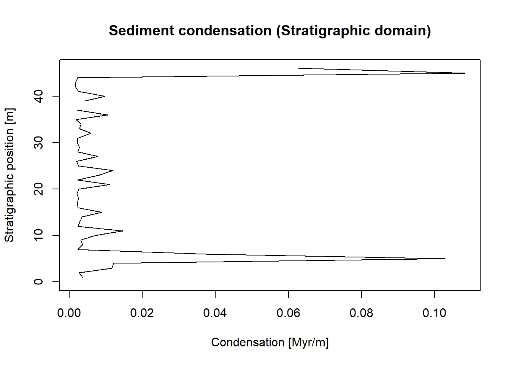
Note that this plot is still in the stratigraphic domain, but the units are Myr/m instead of m/Myr as in the sedimentation rate.
Both with sediment accumulation and condensation, keep in mind that both are extremeny sensitive to the timescale of observation. Changing the scale (t_step and h_step above) can thus drastically change your plots.
4.5 Transforming data between the temporal and stratigraphic domain (and vice versa)
The real power of age-depth models is that they can transform data from the time domain to the stratigraphic domain and vice versa. In the admtools package, this is performed by two functions: * time_to_strat transforms data from the time domain to the stratigraphic domain by replacing entries that reflect time by stratigraphic positions. It takes an optional argument destructive that specifies whether gaps act destructively (i.e., remove data) or not * strat_to_time transforms data from the stratigraphic domain to the time domain by replacing entries that reflect stratigraphic position by times.
4.5.1 Base case
Let’s look at a simple example:
# times
t_example = c(0.2, 0.5)
# transform into stratigraphic positions
h_example = admtools::time_to_strat(t_example,
adm)
# display
h_example[1] 12.94445 NAHere you can see that the time of 0.2 is placed at 13 m stratigraphic height, but the time at 0.5 Myr is associated with a hiatus and is “destroyed” (the argument destructive defaults to TRUE). For comparison
h_example = admtools::time_to_strat(t_example,
adm,
destructive = FALSE)
# display
h_example[1] 12.94445 25.49968returns two numeric values, where 25.5 m is the stratigraphic position associated with the gap.
The transformation of data from the stratigraphic domain to the time domain works identically:
# example stratigraphic positions
h_example = c(4,30)
t_example = admtools::strat_to_time(obj = h_example,
x = adm)
t_example[1] 0.04825809 0.57217924Here you can see that the stratigraphic position at 4 m was formed after 0.048 Myr in your simulation, and that the position at 30 m was formed after 0.57 Myr.
4.5.2 Application to fossil abundance and last occurrences
The power of this conceptual approach is that it immediately generalizes to any type of temporal and stratigraphic data.
As a first example, let’s first simulate fossil occurrences of a single taxon in the time domain.
# set seed for reproducibility
seed = 42
set.seed(seed)
# small constant
eps = 0.01
max_rate = 1000
# fossil occurrences peak 10-fold beteen 0.5 and 0.55 Myr
rate = approxfun(x = c(t_min, 0.45, 0.45 + eps, 0.53, 0.53 + eps, t_max),
y = 100 * c(1, 1, 10, 10, 1, 1),
rule = 2)
plot(x = t,
y = rate(t),
type = "l",
xlab = "Time [Myr]",
ylab = "Abundance [Fossils/Myr]",
main = "Fossil abundance",
ylim = c(0, max_rate))
sim_fossils = StratPal::p3_var_rate(x = rate,
from = t_min,
to = t_max,
f_max = max_rate)
hist(sim_fossils,
breaks = seq(t_min, t_max, length.out = 30),
xlab = "Time [Myr]",
main = " Simulated fossil abundance in the time domain")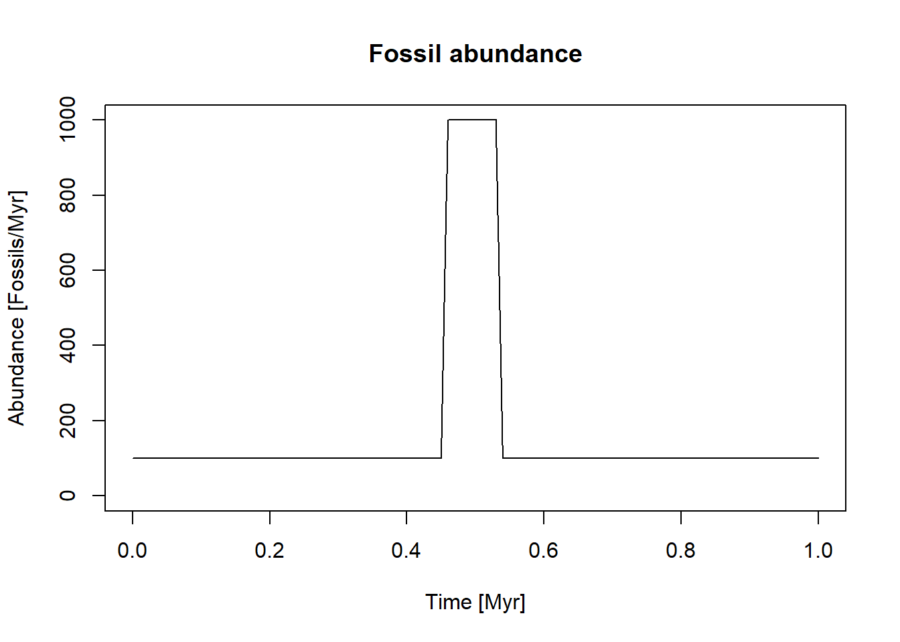
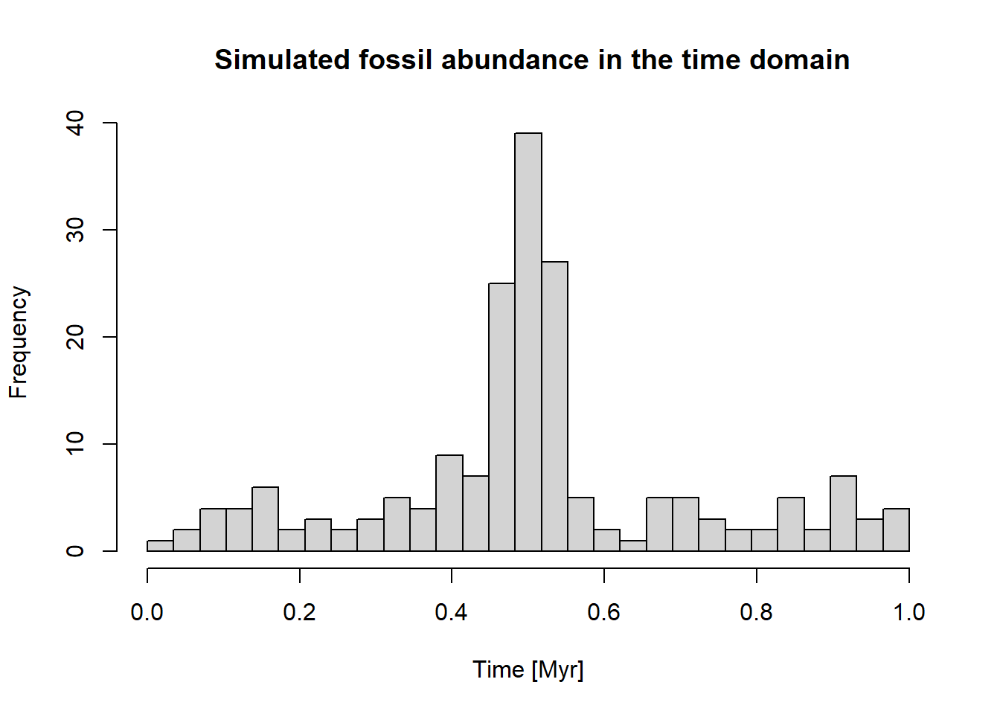
Now we can transform the these fossils into the stratigraphic domain:
sim_fossils_strat = sim_fossils |>
admtools::time_to_strat(adm)
hist(sim_fossils_strat,
breaks = seq(h_min, h_max, length.out = 30),
xlab = "Stratigraphic position [m]",
main = "Fossil abundance in the stratigraphic domain")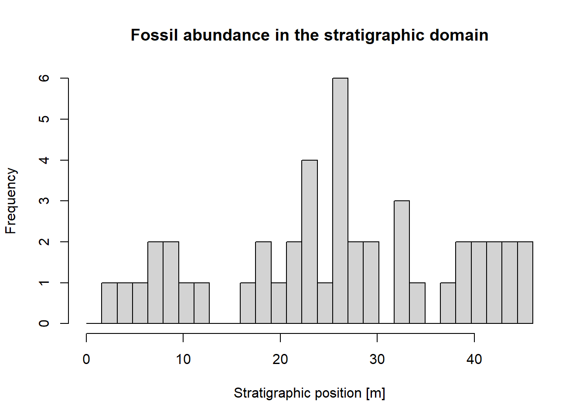
Two things are notable here: First, there are very few fossil preserved in the stratigraphic domain (45 vs. 189 in the time domain) due to the destructive effect of the gaps. Second, the peak in fossil abundance is almost completely missing, as it largely coincides with a gap..
Of course the same works in the other direction: Assuming we observe a constant fossil abundance in the stratigraphic domain, the reconstructed fossil abundance in the time domain is
StratPal::p3(rate = 10,
from = h_min,
to = h_max) |>
admtools::strat_to_time(x = adm) |>
hist(breaks = seq(t_min, t_max, length.out = 30),
xlab = "Time [Myr]",
ylab = "Fossil abundance",
main = "Reconstructed fossil abundance in time domain")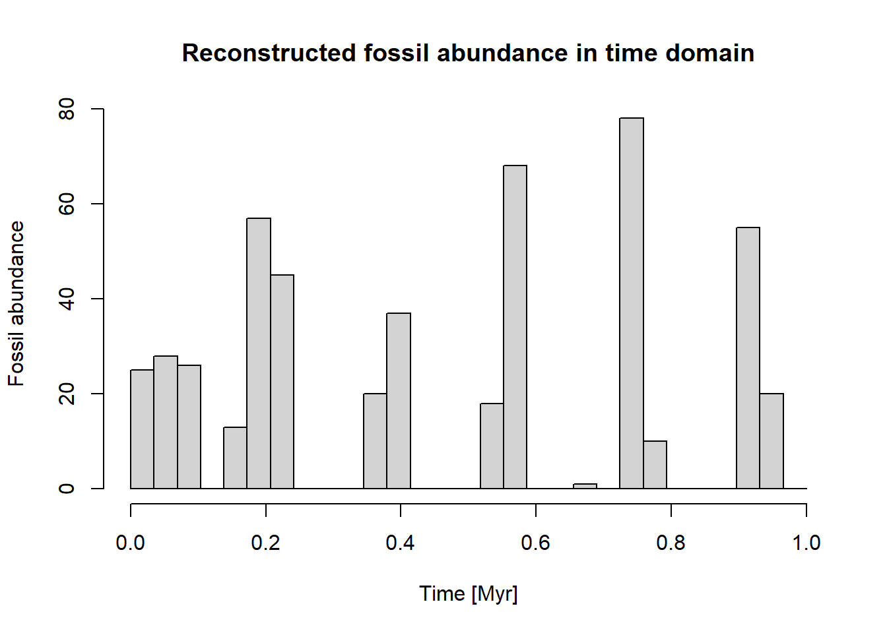
Note here the gaps in fossil abundance are due to the gaps in the fossil record - no fossil ages will be reconstructed during the gap. If you want to explore the interaction between sediment accumulation, age-depth models, and fossil abundance more interactively, check out the Shellbed condensator, a shiny app running in your browser.
Last, we show off a classic example of stratigraphic paleobiology: The generation of artefactual clusters of last occurrences at hiatal surfaces from a regular extinction rate. This example quietly assumes that for each taxon, the fossil abundance is high enough for the Signor-Lipps effect to be neglegible (Why is this assumption needed, and where is it expressed in the code?)
For the extinction rate, we assume it doubles over the timescale of observation. To reduce the effects of noise, we simulate a (unrealistically) large number of last occurrences:
n_lfo = 1000 # no of last occurrences
f_lo = approxfun(x = c(t_min, t_max),
y = c(1,2), # double over timescale of observation
rule = 2)
plot(x = t,
y = f_lo(t),
type = "l",
xlab = "Time [Myr]",
ylab = "Extinction rate [-]",
main = "Extinction rate",
yaxt = "n",
ylim = c(0,max(f_lo(t))))
last_occ = StratPal::p3_var_rate(x = f_lo,
from = t_min,
to = t_max,
n = n_lfo, # condition on the required number of last occurrences
f_max = 2)
hist(last_occ,
breaks = seq(t_min, t_max, length.out = 30),
xlab = "Time [Myr]",
ylab = "Last occurrences [#/Myr]",
main = "Last occurrences in the time domain")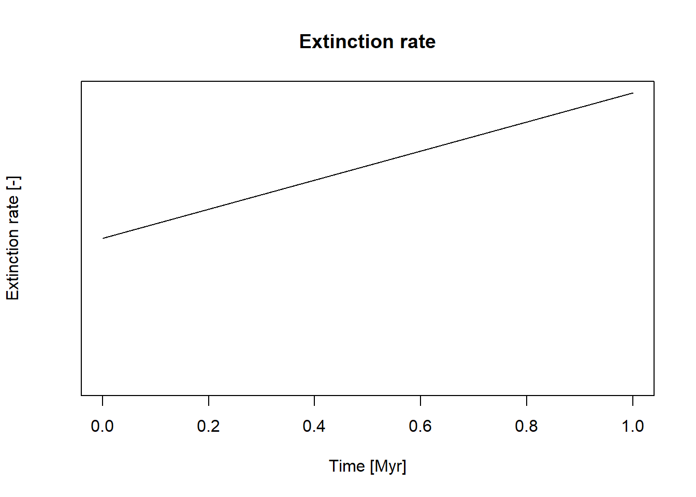
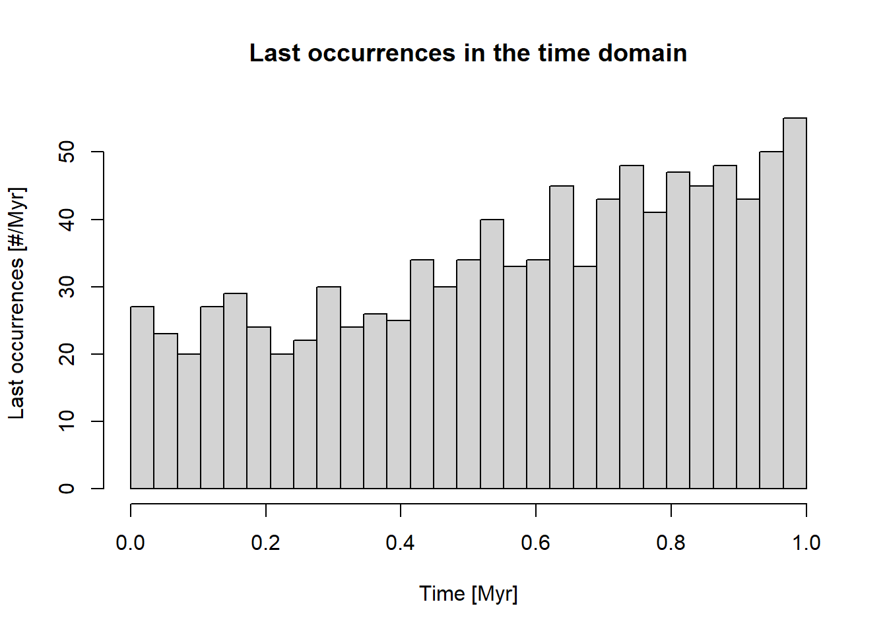
Now let’s transfor this into the stratigraphic domain to see where the last occurrences cluster. We use the option destructive = TRUE to make sure the last occurrences during a gap appear directly at the stratigraphic position of the associated hiatus surface.
last_occ |>
admtools::time_to_strat(x = adm) |>
hist(breaks = seq(h_min, h_max, length.out = 30),
xlab = "Stratigraphic position [m]",
main = "Last occurrences in the stratigraphic domain")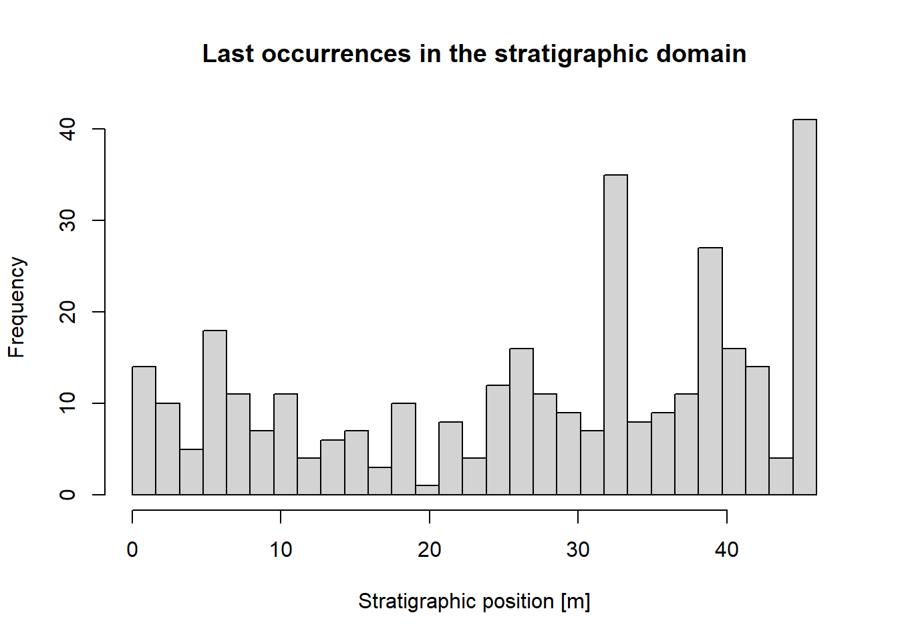
Note the peaks in the histogram at stratigraphic positions with a hiatus surface. In contrast to the simulation with the fossil abundance, here the number of last occurrences is identical in the time and stratigraphic domain.
4.5.3 Effects on trait evolution
As a last example, we show how age-depth models modify our understanding of trait evolution along lineages.
As a baseline, let’s simulate a trait evolving according to a random walk along a lineage:
t_res = 0.01 # temporal resolution
t_sampled = seq(from = t_min, # times where the lineage is sampled
to = t_max,
by = t_res)
# model parameters
sigma = 1 # variance
mu = 3 # directionality
lineage_t = StratPal::random_walk(t = t_sampled,
sigma = sigma,
mu = mu)
plot(lineage_t,
xlab = "Time [Myr]",
ylab = "Trait value",
type = "l",
main = "Trait evolution in the time domain")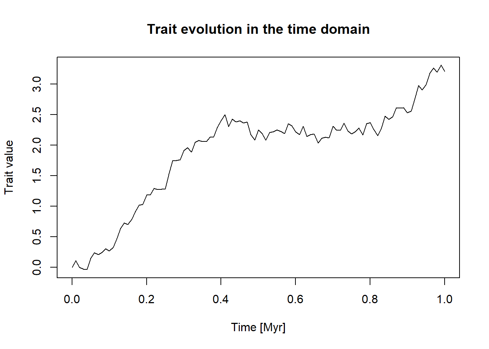
Now let’s see how this evolutionary process is expressed in the stratigraphic domain:
lineage_t |>
admtools::time_to_strat(x = adm) |>
plot(type = "l",
xlab = "Trait value",
ylab = "Stratigraphic position [m]",
main = "Trait evolution in the stratigraphic domain")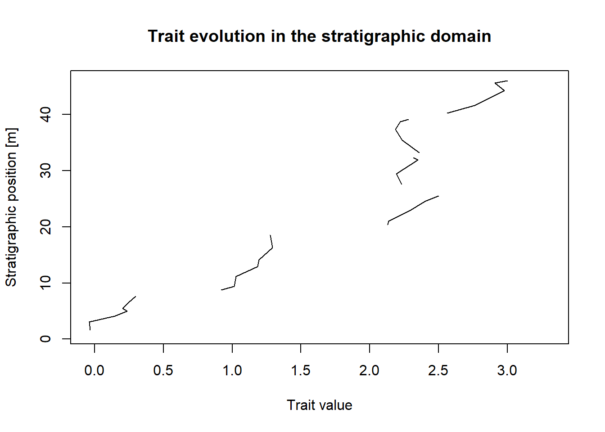
You can clearly see the jumps in trait value over gaps in the stratigraphic record, as all evolutionary history from within the gaps has been removed (punctuated equilibrium anyone?). If you would like to explore the effect of stratigraphy on trait evolution more interactively, have a look at DarwinCAT, a shiny app that runs in your browser.
4.6 Advance topics (optional)
4.6.1 Correlation
Let’s quickly dive into correlation using depth-depth curves. Depth-depth curves are very similar to age-depth model in the sense that they act as coordinate transformations. However, they translate data within the stratigraphic domain by associating coeval stratigraphic positions with each other.
We start by constructing a few more age-depth models:
key1 = "proximal"
key2 = "midplatform"
key3 = "slope"
h1 = data_adm[,which(grepl(key1,names(data_adm)))]
h2 = data_adm[,which(grepl(key2,names(data_adm)))]
h3 = data_adm[,which(grepl(key3,names(data_adm)))] With this, we can define the age-depth model object:
adm_proximal = admtools::tp_to_adm(t = t,
h = h1,
T_unit = "Myr",
L_unit = "m")
adm_mid = admtools::tp_to_adm(t = t,
h = h2,
T_unit = "Myr",
L_unit = "m")
adm_slope = admtools::tp_to_adm(t = t,
h = h3,
T_unit = "Myr",
L_unit = "m")Now we can construct a depth-depth curve from two age-depth models using adm_to_ddc:
ddc = admtools::adm_to_ddc(adm1 = adm_proximal,
adm2 = adm_slope)
plot(ddc,
type = "l",
xlab = "Stratigraphic position proximal [m]",
ylab = "Stratigraphic postion on slope [m]",
main = "Depth-depth curve for correlation")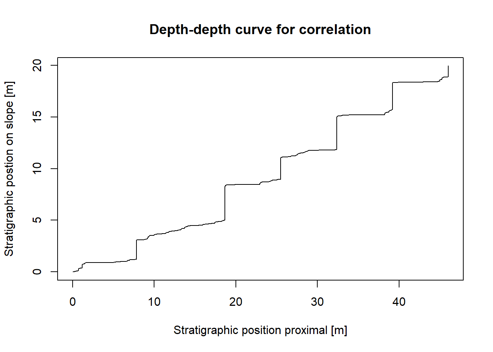
This plot shows which stratigraphic positions in one section is associated with the other. The step-pattern is generated by gaps in the proximal section, as the slope accumulates sediment even if the proximal section is subaerially exposed.